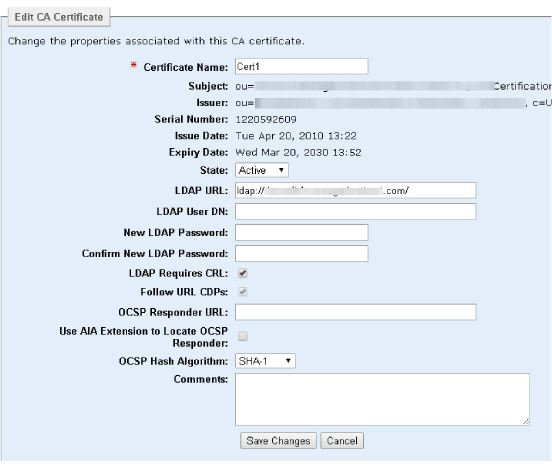

|
IdentityGuard Server 11.0 Administration Guide |
|
IdentityGuard Server 11.0 Administration Guide |
You can modify various aspects of a CA certificate, including its name, its state, and the LDAP parameters associated with it.
To edit a CA certificate
1. Log in to the Entrust IdentityGuard Administration interface as the administrator.
 On the
Windows computer where Entrust IdentityGuard is installed
On the
Windows computer where Entrust IdentityGuard is installed
2. Click Certificates.
3. Click the CA Certificates tab to see a list of the certificates that have been loaded.
4. Select the certificate to edit by clicking its Certificate Name.
The Certificate Details screen appears.
5. Click Edit CA Certificate.
The Edit CA Certificate screen appears.

6. In the Edit CA Certificate screen, modify the following settings, if required:
● Certificate Name — Enter a new name to identify this CA certificate.
● State — From the drop-down list, select the desired state: Active or Inactive.
Tip: Setting the CA certificate to the inactive state has the same effect as revoking the certificate—all of the user certificates issued by the CA can no longer be used for authentication. Unlike revoking the certificate, however, setting the CA certificate to inactive can be reversed by setting it back to active. For more information, see Disable certificate authentication.
● Follow URL CDPs — Select this option if you are using Entrust Managed Services, Entrust Certificate Services, or a Microsoft CA, and if your CA is configured for URL CDPs.
● OCSP Responder URL — Enter the URL of an OCSP responder if supported by your CA.
● Use AIA Extension to Locate OCSP Responder — Select this option if you are using an Entrust Managed Services CA or an Entrust Certificate Services CA.
● OCSP Hash Algorithm — For most implementations, leave the default setting.
When an OCSP responder is used for revocation checking, it may not support SHA-256, which is the default algorithm that Entrust IdentityGuard uses in OCSP requests. Use this setting to choose an algorithm that is supported by the OCSP responder used in your implementation.
● Comments — (Optional) Enter text in the field to describe your configuration.
7. Configure the following settings only if you are using an LDAP repository:
Note: The following
fields are all used for defining where to find the certificate revocation
list (CRL) for your implementation. See Configure
revocation checking for various CAs for details in customizing these
fields for your CA.
If you leave all of these fields blank, certificate revocation lists are
not checked.
● LDAP URL — If you are using an LDAP server, enter the URL that points to the location of the Certification Distribution Point (CDP).
Note: The host name in the LDAPS URL must match the host name in the certificate.
● LDAP User DN — If you specified an LDAP URL, enter the applicable user DN.
● LDAP User DN —If you do not want to authenticate anonymously to the LDAP server, enter an LDAP user DN in LDAP User DN.
● New LDAP Password — Enter the password associate with the LDAP User DN, and then confirm it by entering it again in Confirm New LDAP Password.
● LDAP Requires CRL — For most implementations, the default setting, enable, is appropriate.
By default, when an LDAP URL is specified for a CA, Entrust IdentityGuard expects that CRLs will be present in the LDAP directory. However, the CA might be configured such that CRLs are not published to the directory and the reason the LDAP URL is configured for the CA is so that user encryption certificates can be found as part of derived credential activation. In this scenario, clear the LDAP Requires CRL option so that Entrust IdentityGuard will not expect to find CRLs in the LDAP directory. For more information about derived mobile smart credentials, see the Entrust IdentityGuard Smart Credentials Guide.
8. Click Save Changes.